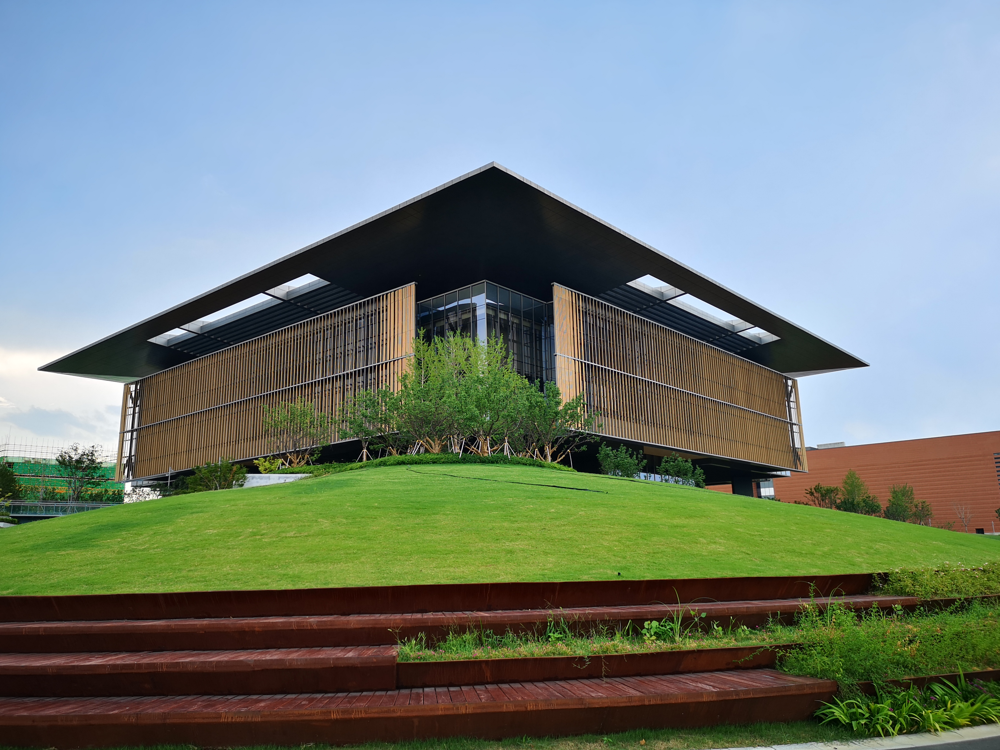
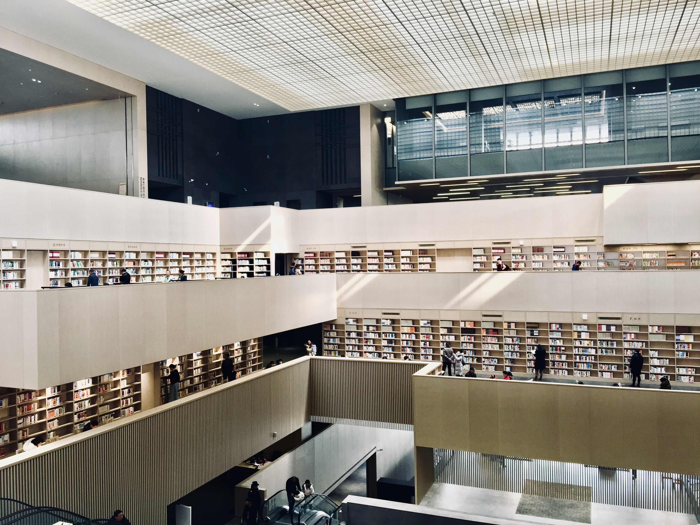
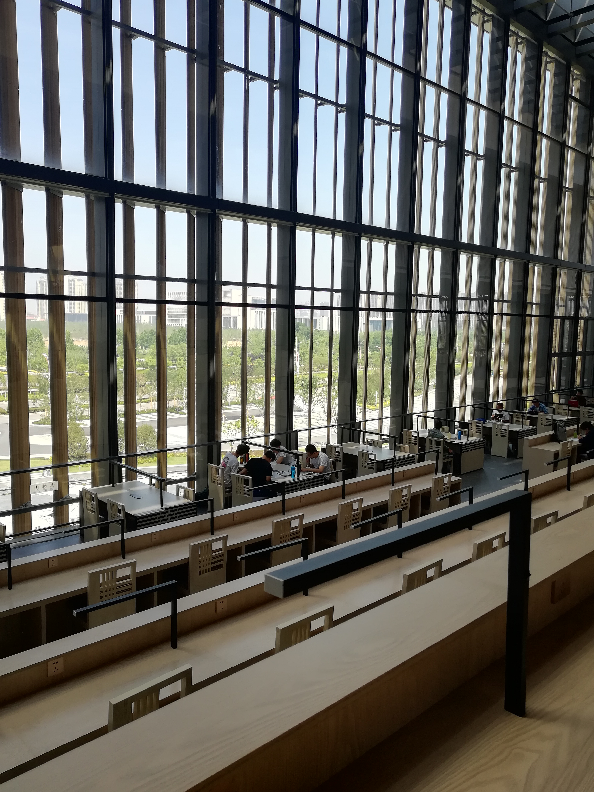

济宁市图书馆 / Jining Library
资料说明：本案例有政府、承建方、ARCHINA 单体案例页、gooood/LLA 文化中心总体资料与 Sogou 微信检索结果交叉支撑，项目身份明确。图纸与部分建筑照片主要来自 ARCHINA 页面；其 CDN 图片直接下载返回 403，已按链接型证据记录，核心建筑技术细节仍需人工复核。
01 基本信息与经济技术指标
| 项目 | 内容 |
|---|---|
| 项目名称 | 济宁市图书馆 |
| 英文名称 | Jining Library |
| 建筑师 / 事务所 | 何镜堂；华南理工大学建筑设计研究院有限公司 |
| 地点 | 山东省济宁市太白湖新区，济宁市文化中心内；政府页地址为运河路138号，ARCHINA 项目位置为圣贤路南、运河路东 |
| 建成 / 开放 | 竣工：2018年12月；试运行：2019年2月1日；正式开放：2019年5月1日 |
| 建筑类型 | 文化建筑 / 市级综合图书馆 |
| 用地面积 | 6787㎡（ARCHINA） |
| 建筑面积 | 29316㎡（ARCHINA）；政府页另称新馆发展至40856㎡，疑为运营口径或馆舍统计口径 |
| 建筑高度 | 檐口34.2m，屋顶36.2m（ARCHINA） |
| 层数 | 地上5层，其中2、3层设夹层（ARCHINA） |
| 主要材料 | 玻璃幕墙、暖灰色陶棍百叶、转印木纹铝板书架及半透格栅（ARCHINA） |
| 服务容量 | 设计藏书约100万册，阅览坐席约1300个（政府页） |
| 信息可信度 | medium-high：身份与核心空间概念明确，施工构造与高精细技术资料有限 |

02 资料质量与证据密度
- 资料状态：partial。
- 一级资料：有。济宁市政府页确认地址、开放时间、设计理念、容量与服务功能；LLA 官网与 gooood/ArchDaily 文化中心三期资料确认文化中心总体关系。
- 建筑专业媒体：ARCHINA 单体页提供最完整的设计说明、指标、功能、图纸目录与材料说明；gooood 和 ArchDaily/LLA 是文化中心三期总体资料，主要用于城市关系。
- 微信补充：Sogou 微信结果中可见中设协建筑设计分会、华南理工设计院、建筑模型博物馆等结果，补充获奖、模型与设计线索。
- 明显不足：结构详图、节点做法、施工过程、幕墙构造层级、节能数据、运营后评价资料不足。
03 一句话判断
济宁市图书馆最值得学习的是：它把“孔孟之乡、礼制书传”的文化定位，转译为九宫格结构骨架、明堂辟雍空间原型、剧场化中庭和陶棍百叶界面，而不是停留在传统符号拼贴。
04 场地信息表
| 场地维度 | 与设计回应相关的信息 | 证据 |
|---|---|---|
| 场地区位 | 位于济宁市文化中心中部，是图书馆、博物馆、美术馆、群众艺术馆等文化建筑群的一部分 | ARCHINA、gooood、LLA |
| 自然环境 | 西侧以公园绿坡与太白湖相接，太白湖生态本底被转译为地景基座 | ARCHINA |
| 人文环境 | 济宁是孔孟之乡、儒家宗源之地，设计以学宫、辟雍、杏坛、明堂等教育礼制原型组织叙事 | 济宁市政府、ARCHINA |
| 道路与交通 | 项目位于圣贤路南、运河路东；政府公开地址为运河路138号 | ARCHINA、济宁市政府 |
| 周边建筑 | 北南方向与群艺馆、博物馆相邻，南端与美术馆呼应；三期高地公园与商业综合体将文化建筑群重新整合 | ARCHINA、gooood、LLA |
| 服务人群 | 市民、儿童、研究查询者、公共活动参与者、文化中心访客 | 济宁市政府、ARCHINA |
| 场地核心矛盾 | 单体既要成为市级图书馆，又要在多建筑师文化中心群落中建立可识别的儒家文化公共空间 | 资料归纳判断 |
05 概念创意探索 Conceptual Exploration
5.1 诊断 Diagnosis
来源明确：当代城市图书馆已不只是藏书借阅设施，而是城市文化形象与公共文化生活的载体。济宁市图书馆处在文化中心核心位置，需同时回应太白湖自然景观、孔孟文化身份和复合型公共服务。
基于资料的归纳判断：设计问题不是“做一个大体量图书馆”，而是在湖区新区中建立一个能被市民理解、进入、停留和反复使用的文化客厅。
5.2 定位 Positioning
来源明确：政府页称建筑以“学宫、辟雍”为设计理念，以杏坛为中心形成由动到静、逐渐打开的十字对称中庭；ARCHINA 将主题概括为“孔孟之乡、礼制书传”，并以“明堂辟雍”为原型进行现代演绎。
5.3 策略 Strategy
来源明确：ARCHINA 描述了四个主要策略：文化传统与自然景观融入当代生活场景；文化性结构；剧场化空间；像素化材质界面。
基于资料的归纳判断：这些策略形成一条较清晰的“概念到建成”链条：地域文化原型进入结构秩序，结构秩序生成中庭和平台，中庭与界面控制阅读体验，最后以陶棍百叶和漫射光完成可感知的文化氛围。
5.4 意象与表达
ARCHINA 图纸/图片链接（下载状态：failed；原因：CDN 403）：总平面及图纸来源、首层平面来源、剖面来源。
{kind=link}
{kind=link}
{kind=link}
06 建筑语言生成 Architectural Language Generation
6.1 功能梳理 Function
来源明确：建筑为市级综合图书馆，包含借阅、展示、研究、教育、休闲、文化服务等活动。首层承担文化中心共享公共服务功能，包括学术报告厅、会议培训、技术用房及共享廊道；2至5层为主要阅览空间，包括传统阅览、电子阅览、专业阅览、藏书库、展览展示、学术培训、尼山书院、咨询服务、行政办公和设备用房。
政府页进一步补充了文献采编、图书借阅、报刊阅览、查询研究、数字阅览、电子资源下载、密集库房，以及朗读亭、AI 图书馆机器人、自动分拣系统、智能书架等智能服务。

6.2 布局逻辑 Layout
来源明确：建筑采用双首层，东侧二层为主入口，西侧首层为次入口。这一做法回应东侧文化高台与西侧太白湖/公园绿坡之间的高差和城市界面差异。ARCHINA 明确指出：西侧以公园绿坡与太白湖相接，东侧以文化高台与商业综合体连接。
基于资料的归纳判断：双首层不是单纯交通处理，而是把文化中心的高台系统和湖区地景系统同时纳入图书馆，使建筑成为连接东侧城市平台与西侧湖景公园的公共节点。
ARCHINA 平面链接（下载状态：failed；原因：CDN 403）：二层平面、四层平面、五层平面。
{kind=link}
{kind=link}
{kind=link}
6.3 形式构成 Composition
来源明确：主体阅览空间“架空升起”，成为内含立体共享空间的剧场式观景盒子；方正体量角部切开，深远轻盈的飞檐庇护玻璃体量，外侧覆以半透明木色/暖灰色陶棍百叶。
来源明确：九宫格骨架交点处设置四个 L 型核心筒，辅以八榀剪力墙、八根正交立柱与四角斜向立柱，共同承托阅览大厅体量，形成“现代立体空中书院”。
6.4 场所与氛围 Place & Atmosphere
来源明确：主要阅览空间位于三至五层，核心为以明堂负形为空间意象的退台式中庭阅览大厅；西侧通过台阶阅览空间朝太白湖打开；古籍阅览区位于明堂空间顶部，可鸟瞰中庭阅览区及太白湖景观；二层中部平台以孔子杏坛讲学为场景意向，可承载学术、展览、交流等活动。
基于资料的归纳判断：它把图书馆的“静态阅读”转化为分层的公共剧场：底部更公共，中部组织交流与展览，高处转向静读和俯瞰，动静梯度与政府页“自下而上由动到静”的描述相互印证。

07 建造品质控制 Construction Quality Control
7.1 建造语言
来源明确：项目以九宫格结构原型组织空间，四个 L 型核心筒、八榀剪力墙、正交立柱与斜向立柱共同形成竖向结构要素。未检索到可靠的结构施工图、节点构造或计算说明，不能进一步推断结构体系细节。
7.2 材料与工艺
来源明确：外立面为玻璃幕墙外覆暖灰色陶棍百叶，陶棍通过旋转渐变形成像素化半透界面，并以 7:2:1 的比例微差间色隐喻竹简质感；室内采用转印木纹铝板书架及半透格栅分隔空间。
ARCHINA 立面/材料照片链接（下载状态：failed；原因：CDN 403）：外观来源、材料界面来源。
{kind=link}
{kind=link}
7.3 构造逻辑
基于资料的归纳判断：项目的构造表达重点不是暴露节点，而是把结构网格、陶棍百叶和室内格栅统一到“书院 / 竹简 / 礼制秩序”的可读界面中。节点做法、幕墙连接和陶棍安装方式未检索到可靠资料。
7.4 物理性能与施工控制
来源明确：陶棍百叶承担调节遮阳、采光与观景需求；自然光通过顶部采光器过滤后进入中庭，形成静谧漫射光环境。施工过程、样墙、性能模拟、节能指标未检索到可靠公开资料。
08 核心方法提炼
方法 1：用文化原型组织结构，而非只做符号装饰
- 面对的问题：孔孟文化背景很容易被简化为装饰图案。
- 具体做法：以明堂辟雍和九宫格图式组织核心筒、剪力墙、立柱与中庭。
- 建筑效果：结构本体成为空间秩序和文化叙事的共同基础。
- 证据来源：ARCHINA、济宁市政府。
- 可迁移方法：地域文化建筑可优先寻找“空间原型”和“秩序原型”，再进入立面语言。
方法 2：用双首层连接城市高台与自然地景
- 面对的问题：文化中心东侧高台、西侧湖景公园与单体入口标高不一致。
- 具体做法：东侧二层主入口、西侧首层次入口，首层容纳文化中心共享服务。
- 建筑效果：图书馆成为城市平台、共享廊道和湖区地景之间的公共转换器。
- 证据来源：ARCHINA、gooood、LLA。
- 可迁移方法：新区公共建筑可把高差和多方向到达转化为复合首层，而非只做单一正门。
方法 3：把阅览大厅做成“剧场化公共空间”
- 面对的问题：大型图书馆功能复杂，容易变成封闭楼层堆叠。
- 具体做法：三至五层组织退台式中庭阅览大厅，西侧台阶阅览朝太白湖打开，二层平台承担杏坛式交流活动。
- 建筑效果：读者可以在阅读、交流、观看、停留之间切换，图书馆获得城市客厅属性。
- 证据来源：ARCHINA、济宁市政府。
- 可迁移方法：公共图书馆中庭不只是采光井，应兼具导向、活动、观看与动静分区。
方法 4：用半透陶棍界面协调遮阳、观景与文化意象
- 面对的问题：阅览空间需要采光和观景，也需要控制眩光与形成文化识别。
- 具体做法：玻璃幕墙外覆旋转渐变陶棍百叶，并以微差间色隐喻竹简。
- 建筑效果：表皮同时承担环境调节、视觉过滤和文化表达。
- 证据来源：ARCHINA。
- 可迁移方法：表皮设计可以把性能、比例、色差和文化联想合并处理。
09 图纸与图片索引
| 图片类型 | 推荐用途 | 正文嵌入状态 / 本地图片 / 来源页面 | 来源 | 下载状态 | 图文相关性 | 版权 / 备注 |
|---|---|---|---|---|---|---|
| 01_hero | 外观识别 | 已嵌入 images/01_gov_library_1.jpg | 济宁市政府 | downloaded | 说明项目作为城市公共文化场馆的形象 | 政府公开页，仅作研究引用 |
| 08_interior | 室内/服务 | 已嵌入 images/08_gov_library_2.jpg | 济宁市政府 | downloaded | 说明开放阅览与公共服务属性 | 政府公开页，仅作研究引用 |
| 08_interior | 室内/体验 | 已嵌入 images/08_gov_library_3.jpg | 济宁市政府 | downloaded | 说明城市大书房与读者活动 | 政府公开页，仅作研究引用 |
| 08_interior | 补充室内/服务 | 已嵌入 images/08_gov_library_4.jpg | 济宁市政府 | downloaded | 补充说明读者空间与运营状态 | 政府公开页，仅作研究引用 |
| 03_plan | 总平/平面分析 | ARCHINA 图纸链接 | ARCHINA | failed | 说明场地与平面组织 | CDN 403，未下载 |
| 04_section | 剖面分析 | ARCHINA 剖面链接 | ARCHINA | failed | 说明中庭、架空与竖向空间 | CDN 403，未下载 |
| 05_elevation | 立面/材料 | ARCHINA 外观链接 | ARCHINA | failed | 说明飞檐、体量、陶棍百叶 | CDN 403，未下载 |

10 对我的设计启发
- 可迁移方法 1：先建立文化原型的空间秩序，再处理形象符号。
- 可迁移方法 2：图书馆中庭应同时承担导向、活动、光环境和公共性，而不是只追求视觉震撼。
- 可迁移方法 3：双首层适合处理高台、地景、城市道路和内部功能之间的多重到达。
- 可迁移方法 4：立面材料可以同时解决性能与叙事，关键是让旋转、密度、色差、透光率等参数服务明确体验。
- 不适合直接照搬的部分：九宫格、明堂、辟雍等原型高度依赖济宁的儒家文化背景，其他城市应重新寻找自己的文化与场地原型。
- 可转化成的分析图：文化原型到结构网格、双首层与场地高差、动静梯度剖面、中庭剧场化空间、陶棍百叶参数化界面。
11 信息缺口与冲突
- 建筑面积口径存在差异：ARCHINA 为29316㎡，济宁市政府页称新馆面积发展至40856㎡，中国建筑报道称约3万㎡。建议正式出版前向设计院或业主确认统计口径。
- 结构体系只公开到“核心筒、剪力墙、立柱”等空间性描述，未见结构施工图或工程技术说明。
- 未检索到幕墙节点、陶棍安装、采光器构造、施工过程、样墙和节能性能数据。
- ARCHINA 图纸图片可在线访问但下载被拒绝，案例包中以来源链接保存。
12 来源列表
Level A：官方与一手来源
Level B：高质量建筑媒体
- ARCHINA：济宁市图书馆 | 华南理工大学建筑设计研究院
- gooood：Jining Cultural Industry Park by LLA
- ArchDaily China：济宁市文化产业园（济宁市文化中心三期）
Level C：中文补充源
- 中国建筑：济宁市文化中心项目图书馆开馆试运行
- Sogou 微信检索结果：中设协建筑设计分会“创新创优 | 何镜堂：济宁市图书馆（建筑设计一等奖）”
- Sogou 微信检索结果：华南理工大学建筑设计研究院“SCAD新闻 | 我院斩获53项2021年度教育部优秀勘察设计奖”
Level D：参考源
- 未采用百科或低质量聚合页作为核心依据。
来源
- 济宁市图书馆level_a济宁市人民政府 / 济宁市文化和旅游局
- Jining Cultural Centerlevel_aLLA (Laguarda.Low Architects)
- 济宁市图书馆 | 华南理工大学建筑设计研究院level_bARCHINA
- Jining Cultural Industry Park (Jining Cultural Center Phase III) by LLAlevel_bgooood
- 济宁市文化产业园（济宁市文化中心三期）level_bArchDaily China
- 济宁市文化中心项目图书馆开馆试运行level_c中国建筑
- Sogou 微信结果：创新创优 | 何镜堂：济宁市图书馆（建筑设计一等奖）level_c中设协建筑设计分会（Sogou 可见摘要）
- Sogou 微信结果：SCAD新闻 | 华南理工大学建筑设计研究院获奖信息level_c华南理工大学建筑设计研究院（Sogou 可见摘要）